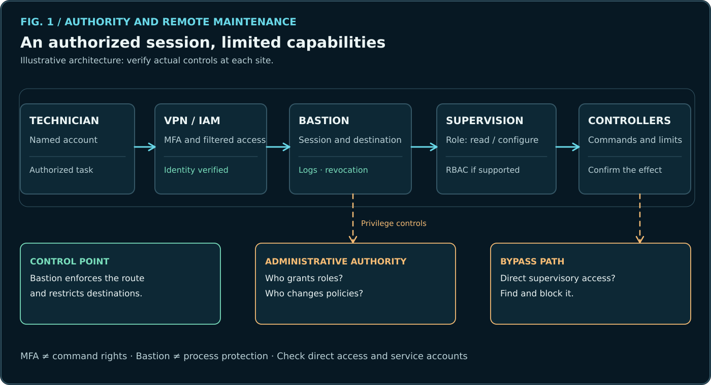
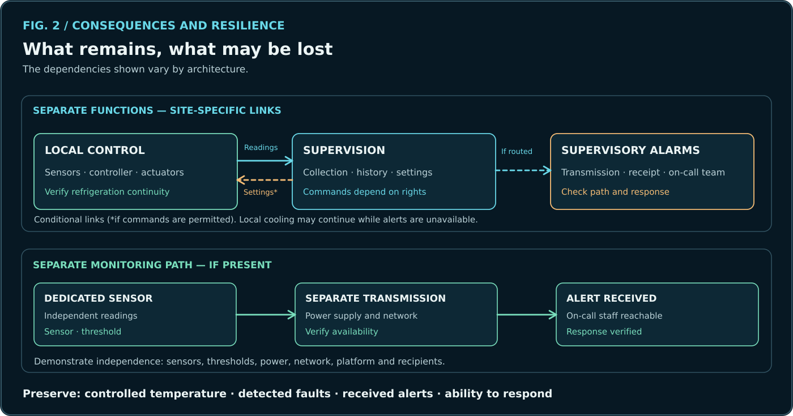

Commercial Refrigeration Cybersecurity: Who Can Control the Systems?
Maintenance access, command privileges and safeguards: assessing how far an adversary could act.
On this page
In October 2026, CERT-FR reported compromises affecting refrigeration supervisory systems.
What could an adversary gain after compromising maintenance access? Information, permission to change settings, the ability to issue commands to equipment? How far could they interfere with refrigeration and alarms?
To answer these questions, we trace the capabilities available to an actor, the safeguards in place and the consequences for the store.

1. Authority required for day-to-day operations
A store must keep its products at the required temperatures. The refrigeration technician needs to monitor the installation, diagnose faults and intervene. Depending on the architecture, a supervisory system centralizes measurements, alarms and certain commands.
Remote maintenance makes these operations easier. It also grants capabilities to people and services: connecting to equipment, viewing data, changing a setpoint, acknowledging an alarm or administering a supervisory system.
The first question is: which actions should each party be allowed to perform, on which equipment and for how long? The maintenance requirement defines the legitimate scope of access rights.
2. How could an adversary acquire these capabilities?
An adversary might look for an exposed interface, obtain credentials, compromise a maintenance workstation or exploit a trusted relationship. These possibilities depend on the actual architecture and safeguards. None of these paths is attributed here to the October 2026 incidents.
Consider an illustrative architecture: a technician reaches the supervisory systems through a VPN and a privileged-access gateway (bastion). The VPN controls entry into the network; the bastion controls destinations and sessions. Each supervisory system retains its own permissions for reading, configuration and commands.

Three controls serve complementary purposes:
- MFA: reduce the risk of stolen credentials being used to establish a session. It does not neutralize an already-compromised session.
- IAM and RBAC: assign named, role-based and site-specific permissions. Reading, changing settings and administration should be separated where the equipment supports it.
- Bastion: centralize sessions, restrict destinations, record interventions and allow access to be revoked, subject to the protocols it supports. This control works only if the relevant maintenance connections actually go through it. Direct paths and bypass accounts must be identified.
Reviewing service accounts, former contractors and administrative privileges is part of the same exercise. Who can grant or extend permissions on the bastion? This authority deserves as much scrutiny as the technicians' permissions.
3. How far does access allow someone to affect refrigeration?
An open session may provide read-only access. Changing the physical process requires a path to the controller, write permissions and a command the controller accepts. The resulting effect then depends on how the installation operates.
The Dixell XR60CX manual describes, among other parameters, a setpoint (SEt) and its upper limit (US). An authority able to change both could move the setpoint and its boundary together. Whether this is possible through a particular supervisory system must be verified against connectivity, version, accessible registers and permissions.
Even when a command is accepted, local protections, operating conditions and thermal inertia determine its effects. The assessment must consider the temperatures actually reached, how long they persist and the means available to intervene.
Alarms are another potential target. Temperature must be measured, a fault detected, the alert transmitted, received and then acted upon. An adversary who disrupts monitoring can reduce the store's ability to respond, even if local control continues to operate.
Documented example — XWEB EVO v5.6.0. The manufacturer's manual describes a maintenance mode (“Service” or “Cleaning”) that can be enabled for a defined period. XWEB ignores alarms from devices placed in that mode; read and write operations through this supervisory system are generally inhibited. The interface provides a separate Edit Maintenance Mode permission. The useful checks are who may enable the mode, whether that action is logged and what monitoring remains available during maintenance. Local controller protections must be assessed separately. XWEB EVO manual, pp. 22 and 93.
4. Where do safeguards change the outcome?

A defensive architecture can interrupt a path at several points: denied remote access, MFA, read-only permissions, a session restricted to one site, a controller rejecting a command, a local safeguard or independent alerting.
Every safeguard must be tied to a specific capability. A bastion reduces the available maintenance paths; it cannot replace controller safety functions or a reliable alarm path.
Continuity requires a separate check. If supervision becomes unavailable, local control may continue operating. The on-call team may nevertheless lose measurements or notifications. Separate monitoring is a genuine fallback only if its sensors, power supply, communications and alert reception remain available.
A critical assessment also seeks evidence that rules out proposed paths: the supervisory system cannot be reached, the account has no write permission, the controller rejects the command, or alerts continue to be delivered. Such findings reduce uncertainty and avoid unnecessary corrective action.
5. What can the operator decide?
A targeted assessment should answer four questions:
- What access paths exist? Exposed interfaces, remote maintenance, direct paths and third-party providers.
- What authority is available? Accounts, MFA, roles, administrative privileges and accessible commands.
- What effects are possible? Settings, alarms, local continuity, consequences for products and response times.
- Which safeguards work? Access restrictions, rejected commands, alarm independence and the ability to intervene.
These answers help remove excessive permissions, close unnecessary paths and preserve essential functions. They require verified configurations and, where necessary, authorized tests conducted with refrigeration professionals.
Conclusion
Remote maintenance provides capabilities essential to operations. Security means controlling who can acquire, exercise or extend those capabilities.
The investigation links access paths, permissions and commands to the store's functions. It identifies the conditions under which an adversary could act and the safeguards capable of stopping that action. The findings support decisions about where to act first.
Sources and limitations
- CERT-FR — Alert concerning remote refrigeration controllers, October 2026.
- Dixell/Copeland — XR60CX controller manual (French).
- Copeland/Dixell — XWEB EVO, operating manual v5.6.0, pp. 22 and 93.
- NIST — Guide to Operational Technology (OT) Security, SP 800-82 Rev. 3.
Documentary analysis and illustrative architectures. Public incident reports, manufacturer-documented capabilities and hypothetical courses of action are kept distinct. Permissions and safeguards must be verified for each installation. No active testing of third-party systems is claimed.
Further reading
- Securing Refrigeration Supervision: A Practical Guide.
- Cyber Resilience in Commercial Refrigeration.
Version 3.3 — 3 November 2026. © 2026 lxrider — All rights reserved.